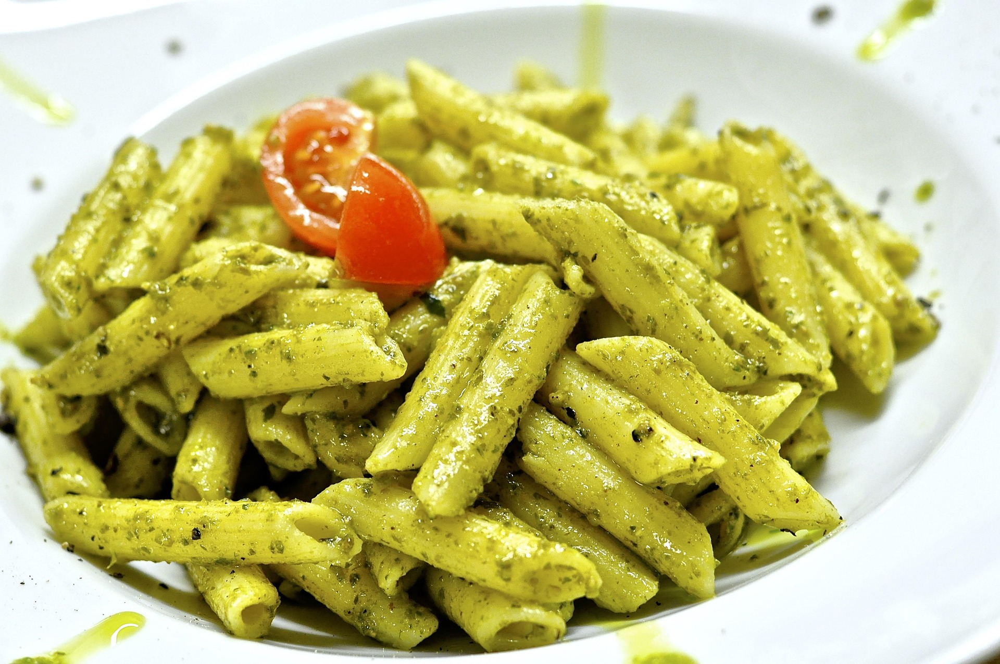

Fill a large pot with lightly salted water and bring to a rolling boil. Stir in pasta and return to a boil. Cook pasta uncovered, stirring occasionally, until tender yet firm to the bite, 8 to 10 minutes. Drain; transfer into a large bowl. Meanwhile, heat oil in a skillet over medium-low heat. Add onion; cook and stir until softened, about 3 minutes. Stir in pesto, salt, and black pepper until warmed through. Stir pesto mixture into hot pasta; stir in grated cheese to coat and put two small tomato wedges on top. If you have any leftovers, they make a great cold pasta salad with some freshly chopped tomatoes.